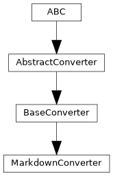

pyTRLCConverter.markdown_converter
Converter to Markdown format.
Author: Andreas Merkle (andreas.merkle@newtec.de)
Classes
MarkdownConverter provides functionality for converting to a markdown format. |
Module Contents
- class pyTRLCConverter.markdown_converter.MarkdownConverter(args: Any)[source]
Bases:
pyTRLCConverter.base_converter.BaseConverter
MarkdownConverter provides functionality for converting to a markdown format.
- _convert_record_object(record: trlc.ast.Record_Object, level: int, translation: dict | None) pyTRLCConverter.ret.Ret[source]
Process the given record object.
- Parameters:
record (Record_Object) – The record object.
level (int) – The record level.
translation (Optional[dict]) – Translation dictionary for the record object. If None, no translation is applied.
- Returns:
Status
- Return type:
- _create_markdown_link_from_record_object_reference(record_reference: trlc.ast.Record_Reference) str[source]
Create a Markdown link from a record reference. It considers the file name, the package name, and the record name.
- Parameters:
record_reference (Record_Reference) – Record reference
- Returns:
Markdown link
- Return type:
str
- _file_name_trlc_to_md(file_name_trlc: str) str[source]
Convert a TRLC file name to a Markdown file name.
- Parameters:
file_name_trlc (str) – TRLC file name
- Returns:
Markdown file name
- Return type:
str
- _generate_out_file(file_name: str) pyTRLCConverter.ret.Ret[source]
Generate the output file.
- Parameters:
file_name (str) – The output file name without path.
item_list ([Element]) – List of elements.
- Returns:
Status
- Return type:
- _get_markdown_heading_level(level: int) int[source]
- Get the Markdown heading level from the TRLC object level.
Its mandatory to use this method to calculate the Markdown heading level. Otherwise in single document mode the top level heading will be wrong.
- Parameters:
level (int) – The TRLC object level.
- Returns:
Markdown heading level
- Return type:
int
- _get_trlc_ast_walker() pyTRLCConverter.trlc_helper.TrlcAstWalker[source]
If a record object contains a record reference, the record reference will be converted to a Markdown link. If a record object contains an array of record references, the array will be converted to a Markdown list of links. Otherwise the record object fields attribute values will be written to the Markdown table.
- Returns:
The TRLC AST walker.
- Return type:
- _on_implict_null(_: trlc.ast.Implicit_Null) str[source]
Process the given implicit null value.
- Returns:
The implicit null value.
- Return type:
str
- _on_record_reference(record_reference: trlc.ast.Record_Reference) str[source]
Process the given record reference value and return a markdown link.
- Parameters:
record_reference (Record_Reference) – The record reference value.
- Returns:
Markdown link to the record reference.
- Return type:
str
- _on_string_literal(string_literal: trlc.ast.String_Literal) str[source]
Process the given string literal value.
- Parameters:
string_literal (String_Literal) – The string literal value.
- Returns:
The string literal value.
- Return type:
str
- _other_dispatcher(expression: trlc.ast.Expression) str[source]
Dispatcher for all other expressions.
- Parameters:
expression (Expression) – The expression to process.
- Returns:
The processed expression.
- Return type:
str
- _render(package_name: str, type_name: str, attribute_name: str, attribute_value: str) str[source]
Render the attribute value depened on its format.
- Parameters:
package_name (str) – The package name.
type_name (str) – The type name.
attribute_name (str) – The attribute name.
attribute_value (str) – The attribute value.
- Returns:
The rendered attribute value.
- Return type:
str
- _write_empty_line_on_demand() None[source]
Write an empty line if necessary.
For proper Markdown formatting, the first written part shall not have an empty line before. But all following parts (heading, table, paragraph, image, etc.) shall have an empty line before. And at the document bottom, there shall be just one empty line.
- begin() pyTRLCConverter.ret.Ret[source]
Begin the conversion process.
- Returns:
Status
- Return type:
- convert_record_object_generic(record: trlc.ast.Record_Object, level: int, translation: dict | None) pyTRLCConverter.ret.Ret[source]
Process the given record object in a generic way.
The handler is called by the base converter if no specific handler is defined for the record type.
- Parameters:
record (Record_Object) – The record object.
level (int) – The record level.
translation (Optional[dict]) – Translation dictionary for the record object. If None, no translation is applied.
- Returns:
Status
- Return type:
- convert_section(section: str, level: int) pyTRLCConverter.ret.Ret[source]
Process the given section item. It will create a Markdown heading with the given section name and level.
- Parameters:
section (str) – The section name
level (int) – The section indentation level
- Returns:
Status
- Return type:
- enter_file(file_name: str) pyTRLCConverter.ret.Ret[source]
Enter a file.
- Parameters:
file_name (str) – File name
- Returns:
Status
- Return type:
- static get_description() str[source]
Return converter description.
- Returns:
Converter description
- Return type:
str
- static get_subcommand() str[source]
Return subcommand token for this converter.
- Returns:
Parser subcommand token
- Return type:
str
- leave_file(file_name: str) pyTRLCConverter.ret.Ret[source]
Leave a file.
- Parameters:
file_name (str) – File name
- Returns:
Status
- Return type:
- static markdown_create_diagram_link(diagram_file_name: str, diagram_caption: str, escape: bool = True) str[source]
Create a Markdown diagram link. The caption will be automatically escaped for Markdown if necessary.
- Parameters:
diagram_file_name (str) – Diagram file name
diagram_caption (str) – Diagram caption
escape (bool) – Escapes caption (default: True).
- Returns:
Markdown diagram link
- Return type:
str
- static markdown_create_heading(text: str, level: int, escape: bool = True) str[source]
Create a Markdown heading. The text will be automatically escaped for Markdown if necessary.
- Parameters:
text (str) – Heading text
level (int) – Heading level [1; inf]
escape (bool) – Escape the text (default: True).
- Returns:
Markdown heading
- Return type:
str
- static markdown_create_link(text: str, url: str, escape: bool = True) str[source]
Create a Markdown link. The text will be automatically escaped for Markdown if necessary. There will be no newline appended at the end.
- Parameters:
text (str) – Link text
url (str) – Link URL
escape (bool) – Escapes text (default: True).
- Returns:
Markdown link
- Return type:
str
- static markdown_create_list(list_values: List[str], escape: bool = True) str[source]
Create a unordered Markdown list. The values will be automatically escaped for Markdown if necessary.
- Parameters:
list_values (List[str]) – List of list values.
escape (bool) – Escapes every list value (default: True).
- Returns:
Markdown list
- Return type:
str
- static markdown_create_table(column_titles: List[str], row_values_list: List[List[str]]) str[source]
Create a complete Markdown table in HTML format to support multi-line cells and other complex content.
- Parameters:
column_titles (List[str]) – List of column titles.
row_values_list (List[List[str]]) – List of row values.
- Returns:
Markdown table
- Return type:
str
- static markdown_escape(text: str) str[source]
Escapes the text to be used in a Markdown document.
- Parameters:
text (str) – Text to escape
- Returns:
Escaped text
- Return type:
str
- static markdown_lf2soft_return(text: str) str[source]
A single LF will be converted to backslash + LF. Use it for paragraphs, but not for headings or tables.
- Parameters:
text (str) – Text
- Returns:
Handled text
- Return type:
str
- static markdown_text_color(text: str, color: str, escape: bool = True) str[source]
Create colored text in Markdown. The text will be automatically escaped for Markdown if necessary. There will be no newline appended at the end.
- Parameters:
text (str) – Text
color (str) – HTML color
escape (bool) – Escapes text (default: True).
- Returns:
Colored text
- Return type:
str
- classmethod register(args_parser: Any) None[source]
Register converter specific argument parser.
- Parameters:
args_parser (Any) – Argument parser
- OUTPUT_FILE_NAME_DEFAULT = 'output.md'
- TOP_LEVEL_DEFAULT = 'Specification'
- _ast_meta_data = None
- _base_level = 1
- _empty_line_required = False
- _excluded_paths = []
- _fd = None
- _is_top_level_heading_req = True
- _out_path